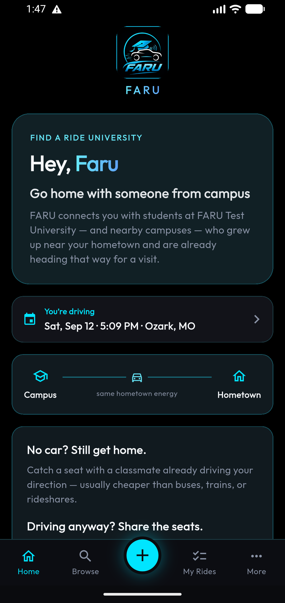
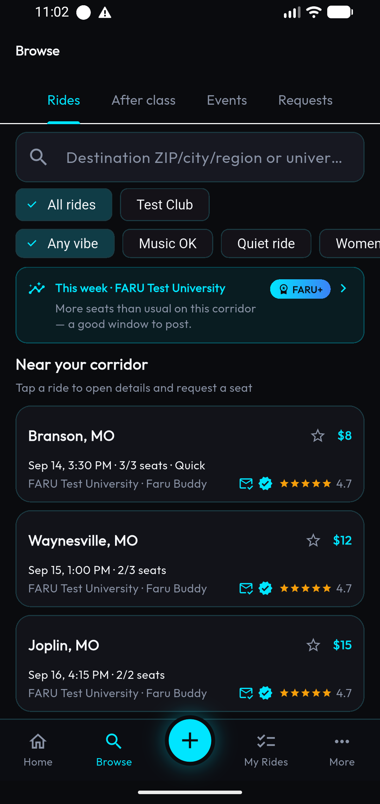
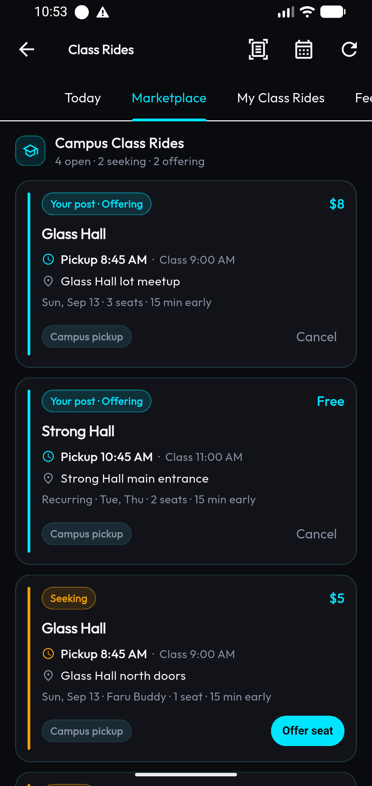
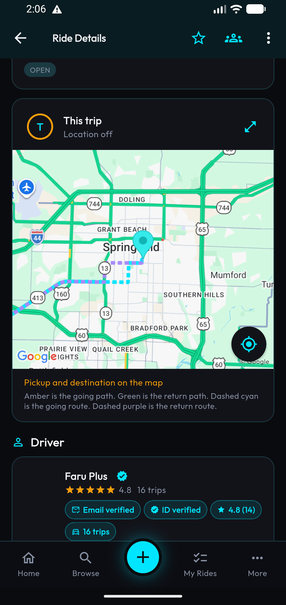
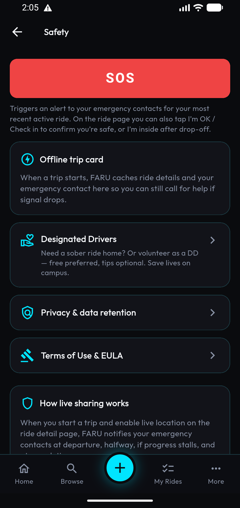
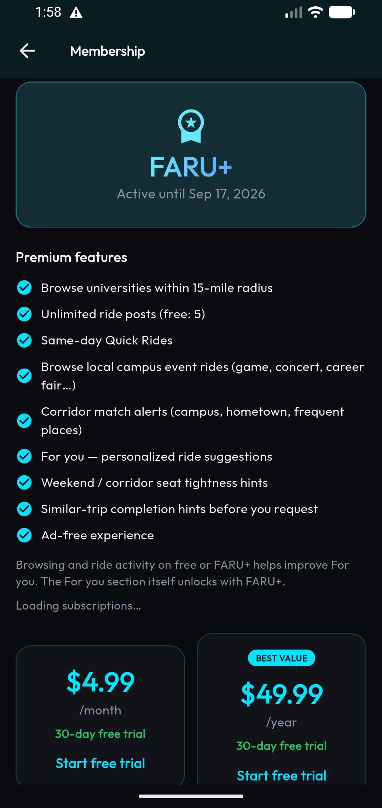

“Having an app like FARU is a game changer! This is overdue!!!”
Campus carpool for college students
FARU
Find a ride home with classmates who already share your schedule — not random drivers from a generic app. Chat first, meet on campus, ride together for break, weekends, and hometown trips.
Not for random city rides with strangers. FARU is classmates only — a campus message board, not Uber.
How it works
FARU is a message board for campus rides — you stay in control of who you meet and when you go. Skip the Facebook rideshare group chaos and the Uber bill for a long trip home.
- Post a ride or request a seat Share where you’re headed — including ride home for break — or post a Ride Request when you need a seat. Verified students only.
- Chat with your match Align on timing and pickup in-app before you share a live location or hop in a car.
- Meet on campus and ride Pick a public spot you already know. Optional SOS, guardians, and check-ins stay available on the free tier.
Got a car? Fill your empty seats
Going home for break with seats open? Post the ride and split gas with classmates going the same way — cost recovery, not a side hustle.
- Fill empty seats Post trips classmates already need — hometown weekends, Thanksgiving, end-of-semester break.
- Split gas, not profits Agree on a fair gas share in chat. You’re helping each other get home, not running a taxi.
- No gig paperwork No payment processing, no Stripe payouts, no rideshare-driver onboarding. FARU doesn’t take a cut of seat prices.
Inside the app
From a ride-home listing to a matched classmate trip — here’s what students see when they find a seat for break.






Built for student rides
Post a ride, find a match, and stay in the loop with people from your campus — not strangers from a generic carpool app.
- Hometown rides Find classmates driving home for break, Thanksgiving, or weekends — the ride home without Uber prices for 200 miles.
- Campus ride board Post and browse classmate trips at your university, then request a seat when it fits.
- Chat before you commit Message in-app to align on timing, pickup, and who’s going where — clearer than a disorganized Facebook rideshare group.
- Ride Requests Need a seat? Post a Ride Request for free as a verified student — drivers can offer.
- Class Rides & corridors FARU+ unlocks schedule-aware Class Rides, Quick Rides, wider campus browse, and hometown corridor alerts.
- Safety built in SOS, guardians, check-ins, live location sharing, report, and block stay on the free tier — something you can show a parent.
Growing campus by campus
FARU is built for verified classmates on real campuses. We’re early — density grows when students post hometown and break rides together.
Campus presence
Live campus counts and classmate avatars go here once we publish real numbers — we won’t invent them.
- Your campus — add real rider count
- Nearby schools — add when live
- Hometown corridors — add when live
From classmates who’ve used it
Students who found a ride home, made the break trip, and split gas with classmates.
“I almost missed going home for the holiday because I couldn’t find a ride before the break from the people I knew at school. Someone mentioned downloading FARU….let’s just say, I made it home and back! I need FARU, FARU need me, lbs”
“Instead of paying for the weekend home trip by myself, I was able to split the gas, meet some insanely great people from my campus I didn’t know, and now I have some friends that will probably be in my life forever. Couldn’t of went any better than this.”
What’s free vs FARU+
Core campus rides and safety stay free. FARU+ adds wider browse, smarter matching, Class Rides, and an ad-free experience. Unlike per-ride campus apps that charge base + per-mile fees, FARU is a membership — you don’t pay a cut of every seat.
Included
Free
With a verified student account — no credit card required to start free
- Browse open rides at your university
- Post rides (up to 5 open at a time)
- Request seats on classmate listings
- Ride Requests (need a seat) — free for verified students
- In-app chat before you ride
- SOS, guardians / emergency contacts, and check-ins
- Optional live location sharing with linked emergency contacts
- Report and block
- Designated Driver opt-in; join club DD networks with codes
- Enter your class schedule and Feed the App building votes
- View your campus official event calendar when the school enables it
Most popular
Membership
FARU+
30-day free trial, then $4.99/mo or $49.99/yr Save 17% with annual
Less than one Uber ride home. FARU+ pays for itself on your first break trip.
- Browse universities within about 15 miles
- Unlimited open ride posts
- Same-day Quick Rides
- Corridor match alerts (campus, hometown, frequent places)
- For you — personalized ride suggestions
- Weekend / corridor seat tightness hints
- Similar-trip completion hints before you request
- Class Rides marketplace (seeks/offers, match notifies, pickup-before-class buffer)
- Browse and post campus event rides
- Class Rides live share to emergency contacts
- Start a club / group Designated Driver network
- Ad-free experience
Start from Membership in the app. Cancel in your Apple or Google store subscriptions before the trial ends to avoid charges.
Full pricing detail: FARU pricing page
Safety that fits campus life
FARU is a message board for campus rides — not a taxi service. You stay in control of who you meet and when you go.
- Classmates over strangers Built around school communities and shared schedules so rides start with familiar context.
- Talk, then travel Use chat to confirm details before you share a location or hop in a car.
- Meet where it feels right Pick well-lit, public campus spots you already know.
- Report & block Tools to cut off bad actors and flag problems to the team.
- You’re the driver of decisions FARU doesn’t process payments for rides or send drivers to your door.
Safety & trust FAQ
Straight answers to the questions students (and parents) ask before trying a campus ride app.
Is FARU safe?
FARU is built for verified classmates, not random drivers. Chat before you ride, meet on campus, and use report/block if something feels wrong. SOS, guardians, and check-ins are available on the free tier. FARU does not process ride payments or dispatch drivers to your door.
Are these strangers?
Matches are other students at your school (and, with FARU+, nearby campuses). Listings are student-authored board posts — you choose who to message and who to ride with.
Do I need FARU+ to use the app?
No. Verified students can browse campus rides, post a limited number of open rides, request seats, post Ride Requests, chat, and use core safety tools for free. FARU+ unlocks wider browse, Quick Rides, Class Rides, corridor alerts, For you, and an ad-free experience.
How does FARU+ billing work?
Start a 30-day free trial from Membership in the app, then $4.99/month or $49.99/year through Apple or Google. Annual saves about 17% vs paying monthly. Cancel in your store subscriptions before the trial ends to avoid charges.
Is FARU a taxi or rideshare company?
No. FARU is a campus message board for rides. Students arrange trips with each other. We don’t take a cut of seat prices and we don’t send a driver to you.
What if my campus is still growing?
FARU works best when classmates post hometown and break rides together. Early on a campus, post your ride home or Ride Request so others going your way can find you — density grows one corridor at a time.
Why I built FARU

Tony Gunn Jr
Founder · Shot Call’a Games, LLC / Improvestu
I’m a family person from St. Louis. Freshman year at Missouri State I didn’t bring a car — rides home meant word of mouth or a bulletin-board note in the student union. Sometimes that worked; too often I missed holidays because I couldn’t find a seat. I built FARU so classmates can share the ride home without Uber prices for a 200-mile trip.
Compare & learn more
- FARU vs RideAlong Membership message board vs per-ride campus network.
- FARU vs Ridemate Schedule-aware classmates vs intercity student carpool.
- Campus carpool guide How student ride-home boards work for break and weekends.